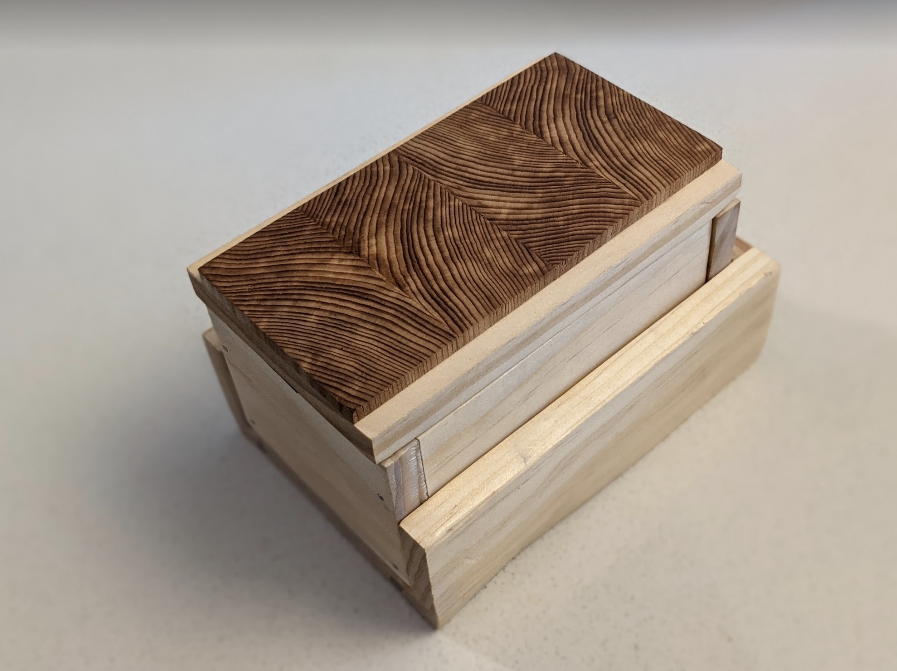
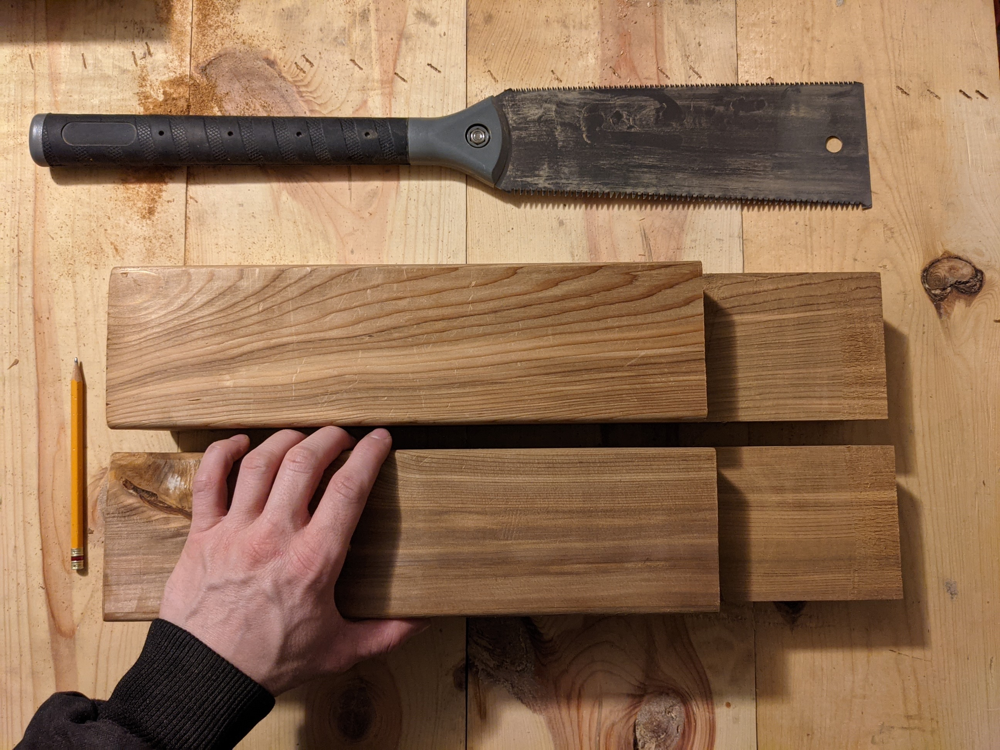

FELIX DULYS
DATA SCIENTIST
I love data and I love to create.
Hey there! I'm Felix (fell-icks) Dulys (doo-leese) and I use he/him pronouns. I work at Brightloom as a Senior Data Scientist.
professional highlights
A few years ago, I helped build Simple Energy as an Energy Data Analyst, then as a Data Scientist. I also worked as a Senior Data Scientist for what it became, Uplight.
I trained as an applied economist (M.Sc) at Michigan State University's AFRE (agriculture, food, and resource economics) program where my research focused on field experimentation, willingness to pay pricing, and bioenergy.
I served 2 years & three months in the Peace Corps in rural Panama in the Sustainable Agriculture Systems program. In conjunction I worked as a National Agribusiness Coordinator leading trainings across the country.
Publications and Recent Work
I did an analysis for energy utilities that predicted energy use changes in a pandemic. This analysis was the first of its kind and quality. I turned it into a tool for Uplight to use throughout the pandemic with their utility customers.
S. Swinton, S. Klammer and I wrote "Why Biomass Residue Is Not as Plentiful as It Looks: Case Study on Economic Supply of Logging Residues," which was published in the journal of Applied Economic Perspectives and Policy in 2020. This is an open-source work available free of charge.
The same group and I wrote "How willing are different types of landowner to supply hardwood timber residues for bioenergy?". This work was published by the journal Biomass and Bioenergy in 2019. This was published under my previous name.
I wrote "What can we learn from 400 years of United States executions?" in Toward Data Science in 2019.
In 2016, the Journal of Hunger & Environmental Nutrition published "Benefits, Barriers, and Challenges to University-Level Food Waste Tracking," which I assisted with. This was published under my previous name.
In 2013, I volunteered my spare time bought through the Peace Corps Masters International Fellowship to work on "Raising the Incomes of Smallholder Farmers in the Central Highlands of Angola: A Model Project for Improving Agricultural Value Chains in Post-Conflict Nations." This was published under my previous name. I performed a quasi-experimental propensity scoring technique in an attempt to salvage a field experiment that was ravaged due to a civil war. The Bill and Melinda Gates Foundation funded this project through World Vision, which was executed through Michigan State University's AFRE Department.
I do things other than data science. Here are some projects I have recently finished:
 This is a collapsible dice tower prototype I've given to a friend for testing and feedback.  I made a custom bedframe with hand-cut joints.You can find me in a few places.
© Felix Dulys. All rights reserved. Design: HTML5 UP.